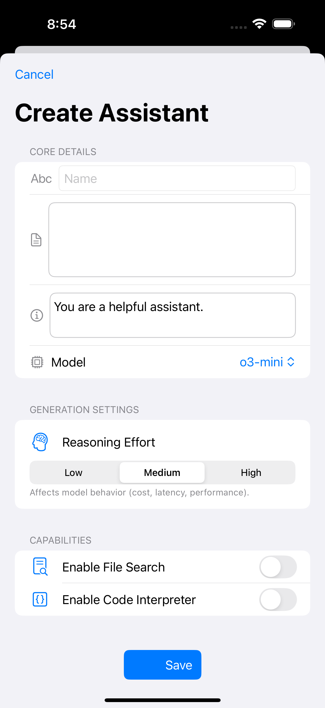

OpenAssistant
A Native SwiftUI iOS Client for the OpenAI Assistants API
A professional-grade iOS application that brings the full power of OpenAI's Assistants API to your mobile device. Built entirely with SwiftUI and the Combine framework, OpenAssistant provides comprehensive assistant management, intelligent vector storage, and real-time conversations in a beautifully crafted native iOS experience.
